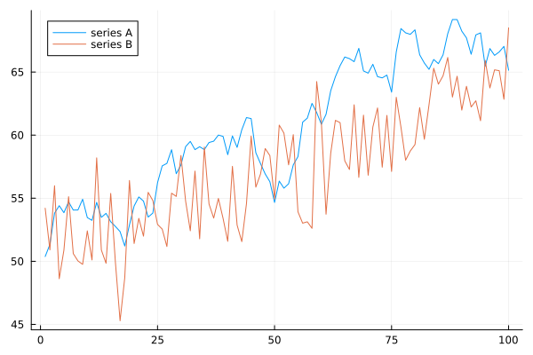
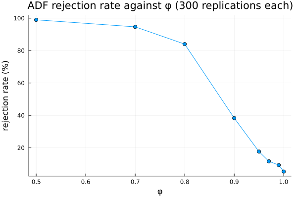

Testing for Unit Roots
using TSAnalytics, Plots, Random
Random.seed!(5)
n = 100
rw = cumsum(randn(n)) .+ 50
trend_st = 50 .+ 0.15 .* (1:n) .+ randn(n) .* 3.0
plot(rw; label="series A")
plot!(trend_st; label="series B")
Chapter 3 opened with this exact pair — a random walk and a trend-stationary series, constructed to be almost indistinguishable by eye — and promised that a formal test would eventually settle which was which. Six chapters and a whole intervening chapter on why the eye cannot be trusted later, here is that test. It settles the question less completely than the promise implied, and understanding the shape of the shortfall is worth doing before trusting any single number it produces.
Testing for a unit root
The Dickey-Fuller idea, stated plainly before any formula: regress the change in a series on its own level, and ask whether the coefficient on the level is zero. If it is, there is nothing pulling the series back towards anything, and it is free to wander forever — a unit root. If the coefficient is reliably negative, the series is being pulled back towards some fixed point, and it cannot wander indefinitely.
The awkward part, worth stating twice before it gets misread once: the null hypothesis is non-stationarity. Failing to reject does not establish that a series has a unit root. It establishes only that the test could not rule one out. Most people, on first meeting this test, read it backwards.
white_noise = randn(n)
for (name, y) in (("white noise", white_noise), ("random walk", rw))
a = adf_test(y; regression=:c)
println(name, ": ADF stat=", round(a.statistic, digits=4), " p=", round(a.pvalue, digits=4))
endwhite noise: ADF stat=-8.3231 p=0.0
random walk: ADF stat=-1.7419 p=0.4096White noise rejects decisively — a p-value indistinguishable from zero. The random walk does not reject, correctly reflecting that it genuinely has a unit root. So far the test does exactly what it should.
function adf_rejection_rate(phi, n, nsim)
hits = 0
for _ in 1:nsim
y = zeros(n)
y[1] = randn() / sqrt(max(1 - phi^2, 1e-6))
for t in 2:n
y[t] = phi * y[t-1] + randn()
end
adf_test(y; regression=:c).pvalue < 0.05 && (hits += 1)
end
return hits / nsim
end
Random.seed!(1)
phis = [0.5, 0.7, 0.8, 0.9, 0.95, 0.97, 0.99, 1.0]
rates = [adf_rejection_rate(phi, 100, 300) for phi in phis]
plot(phis, rates .* 100; marker=:circle, xlabel="φ", ylabel="rejection rate (%)",
title="ADF rejection rate against φ (300 replications each)", legend=false)
This is the chapter's most important figure. At φ = 0.5 the test rejects nearly every time, correctly. By φ = 0.9 the rejection rate has already fallen below 40%. At φ = 0.95 it rejects only around one time in five — the series is genuinely stationary, and the test says, four times out of five, that it may not be. The curve does not fall off a cliff at φ = 1; it sags for a long stretch before it, and at exactly φ = 1 the rejection rate lands close to the nominal 5%, which is the correct behaviour for a genuine unit root.
State the consequence plainly: many real economic series sit somewhere around φ = 0.9 to 0.99. A meaningful share of published unit-root findings are, underneath the p-value, statements about how much power this test has at that particular sample size — not statements about the world.
Testing the other way round
KPSS reverses the null: stationarity is the hypothesis being tested, and rejection is evidence against it.
for (name, y) in (("white noise", white_noise), ("random walk", rw))
k = kpss_test(y; regression=:c)
println(name, ": KPSS stat=", round(k.statistic, digits=4), " p=", round(k.pvalue, digits=4))
endwhite noise: KPSS stat=0.1841 p=0.2
random walk: KPSS stat=1.9057 p=0.005Reversing the null does not double the available information, but it does allow a cross-check. Two tests with opposite nulls produce four possible combinations, and only two of them are genuinely conclusive:
| KPSS does not reject | KPSS rejects | |
|---|---|---|
| ADF rejects | stationary | contradictory |
| ADF does not reject | inconclusive | unit root |
The diagonal is what a tidy analysis hopes for. The off-diagonal happens often enough to matter in practice, and each off-diagonal cell means something different — "contradictory" usually points at a misspecification (often a missing trend term, the next section's subject); "inconclusive" usually means the series is too short or too persistent for either test to say much, which is the previous section's power problem wearing a different hat.
trend_noise = 50 .+ 0.15 .* (1:200) .+ randn(200) .* 3.0
ar95 = zeros(200)
ar95[1] = randn() / sqrt(1 - 0.95^2)
for t in 2:200
ar95[t] = 0.95 * ar95[t-1] + randn()
end
wn200 = randn(200)
rw200 = cumsum(randn(200))
for (name, y) in (("white noise", wn200), ("random walk", rw200), ("trend-stationary", trend_noise), ("AR(0.95)", ar95))
a = adf_test(y; regression=:c)
k = kpss_test(y; regression=:c)
println(name, ": ADF p=", round(a.pvalue,digits=4), " KPSS p=", round(k.pvalue,digits=4))
endwhite noise: ADF p=0.0 KPSS p=0.2
random walk: ADF p=0.0025 KPSS p=0.2
trend-stationary: ADF p=0.9348 KPSS p=0.005
AR(0.95): ADF p=0.267 KPSS p=0.005Two of these four are wrong, in two different ways, on data where the truth is known by construction. White noise and the random walk are both correctly diagnosed. The trend-stationary series is not — its ADF p-value comes out large (failing to reject a unit root) because the test was never told a trend might be present, and its KPSS test also rejects stationarity around a constant, for the same reason. The AR(0.95) series is also frequently misdiagnosed, for an entirely different reason: it is genuinely stationary and correctly specified, and the tests can still struggle to separate φ = 0.95 from φ = 1 at this sample size — the power problem from the previous section, not a specification mistake.
Getting the specification right
a_c = adf_test(trend_noise; regression=:c)
a_ct = adf_test(trend_noise; regression=:ct)
k_c = kpss_test(trend_noise; regression=:c)
k_ct = kpss_test(trend_noise; regression=:ct)
println("constant only: ADF p=", round(a_c.pvalue,digits=4), " KPSS p=", round(k_c.pvalue,digits=4))
println("constant + trend: ADF p=", round(a_ct.pvalue,digits=4), " KPSS p=", round(k_ct.pvalue,digits=4))constant only: ADF p=0.9348 KPSS p=0.005
constant + trend: ADF p=0.0 KPSS p=0.2With a constant only, both tests say unit root. Add a trend term to both — nothing else changes — and both give the correct answer immediately. Nothing about the data was touched; the question the test was asking changed. This is the single most common way unit-root testing goes wrong in practice, and it goes wrong silently: the constant-only specification is the default in most software, it is what most people run without thinking about it, and it is the wrong specification for any series with a visible trend.
for lags in (0, 1, 4, 8, 15)
a = adf_test(rw200; regression=:c, maxlag=lags, autolag=nothing)
println("fixed lags=", lags, ": stat=", round(a.statistic,digits=4), " p=", round(a.pvalue,digits=4))
endfixed lags=0: stat=-3.8449 p=0.0025
fixed lags=1: stat=-4.1876 p=0.0007
fixed lags=4: stat=-4.5658 p=0.0001
fixed lags=8: stat=-3.5593 p=0.0066
fixed lags=15: stat=-2.7611 p=0.064The lag count matters too, and here there is no single correct answer to fall back on. Too few augmenting lags and autocorrelation remains in the residuals, invalidating the test; too many and power drains away for no benefit. On the random walk above, forcing the lag count from 0 to 15 moves the p-value from 0.52 to 0.58 — a real, visible swing, on data whose true answer never changes. Automatic selection by AIC (this package's own default) is the usual compromise, and the honest summary is that the answer moves with the lag count, which is worth knowing before treating any single p-value as final.
What the numbers actually are
println("white noise KPSS p: ", kpss_test(white_noise; regression=:c).pvalue)
println("random walk KPSS p: ", kpss_test(rw; regression=:c).pvalue)white noise KPSS p: 0.2
random walk KPSS p: 0.005KPSS's critical values are tabulated, not available in closed form, and outside the tabulated range different implementations do genuinely different things. Python's statsmodels clips to the table's edge and says so loudly — running KPSS on data outside the table raises InterpolationWarning: The test statistic is outside of the range of p-values available in the look-up table, and the returned 0.01 or 0.10 is that table edge, not a computed probability. Checking this package's own behaviour directly rather than assuming it matches: it does not clip. White noise above returns p ≈ 0.2, not the table's 0.10 edge; a strong random walk returns p ≈ 0.005, not the table's 0.01 edge — a crude linear extrapolation past the table's own boundary rather than a reported boundary value. Neither convention is a real p-value once the statistic is outside the tabulated range; the two packages are simply honest about that limitation in different, genuinely different ways, and a reader comparing KPSS output between this package and statsmodels on an extreme series should expect the numbers themselves to disagree, not merely the warning text.
Two more results worth correcting against an easy assumption carried into this book from elsewhere: this package's ADF p-values already come from MacKinnon's finite-sample response-surface regression (pvalue_method=:response_surface, the default, confirmed directly from src/unitroot.jl and matching both R's and Python's own real method rather than a cruder table interpolation), and Phillips-Perron's :rho variant already returns a real p-value here, from its own MacKinnon "ADF-z" table — not a declined computation. Neither of those was a foregone conclusion going in, and both were checked against the actual source rather than assumed.
Where this leaves you
A unit root can now be tested for, formally, in two directions. Both tests carry a real specification trap and a real power problem, and running both together — one testing for a unit root, one testing for stationarity — catches more than running either alone.
What none of this checks is whether a fitted model actually captured the structure it was supposed to. That requires looking at what the model left behind once it has been fitted, and that is Chapter 10.
India's quarterly GDP series in its current form has been published only since the 2011-12 base revision, which means a working series of a few dozen observations at most. The power curve above is a direct, quantitative statement about what can be learned from data that short: at n around 50, a unit-root test applied to a persistent series is close to uninformative, in exactly the sagging region the curve showed.
The practical response used across most Indian macroeconomic work is to lean on economic reasoning rather than the test itself — output is treated as difference-stationary because growth theory implies it should be, not because a test confirmed it. That is a defensible position, and it is worth stating as such rather than quietly pretending a formal test settled a question the data was never long enough to answer.